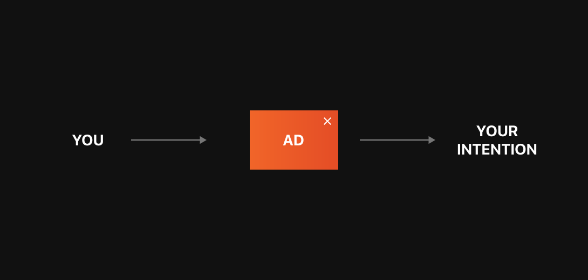
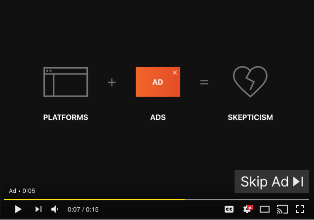
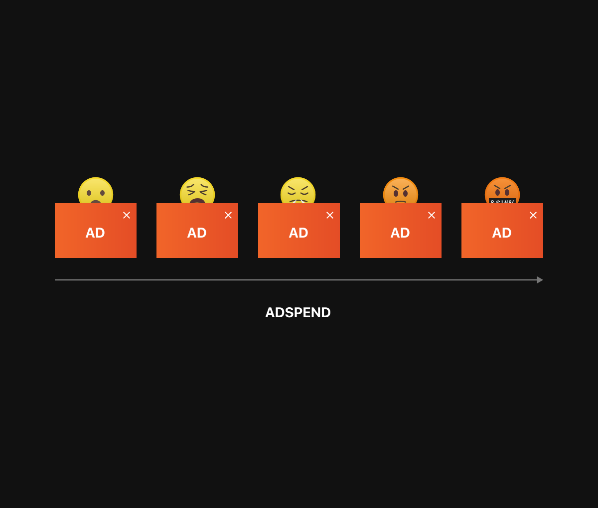

It’s time for a new kind of
advertising
for the internet.
Attention is a scarce asset. Yet, today’s advertising
platforms are built on
a
model
of interruption, forcing brands between you and your intention.


Though ads are everywhere, people don’t trust them.
Study after study shows when you pay to reach people in an interruptive way, less than 5% pay attention.

View Profile
›
In today’s interruption advertising model, the more money you spend, the more people you annoy.
Advertisers are trying to solve this lack of trust problem by spending more money and showing more
ads but that only makes it worse. This is not a content problem. This is not a targeting problem.
It’s a context problem.
People don’t trust ads. People trust people. Brands don’t need more ads. They need more people sharing them in trusted contexts.
By making images available for open use, Unsplash has become the primary source for visuals on the internet. Images on Unsplash are regularly seen more than the frontpage of The New York Times.
Unsplash puts your content in the hands of people, the creators of the internet. They add context by sharing your visuals with their audiences.
When your content is leveraged by choice and embedded in a trusted context, attention stays intact.
Your content organically spreads across the internet. Initially, you reach all the creators. Then, with their networks, you reach the entire internet.
The attention of devoted audiences can only be earned by brands that stop trying to take value and start trying to add value.
Ads don’t have to be creepy or annoying to work.
They just have to add value.
123
Advertising for those who know there’s a better way.
Make something awesome